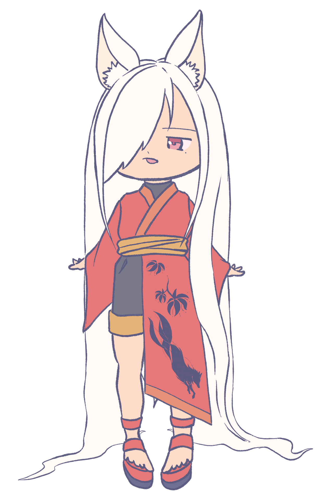
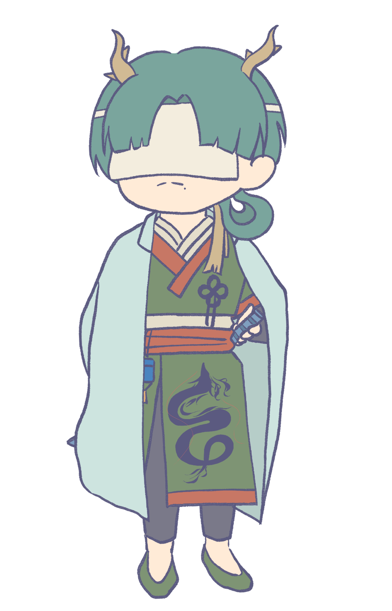
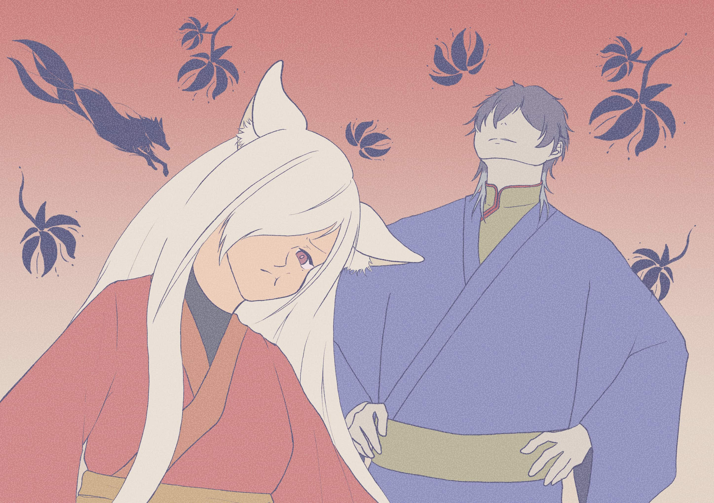
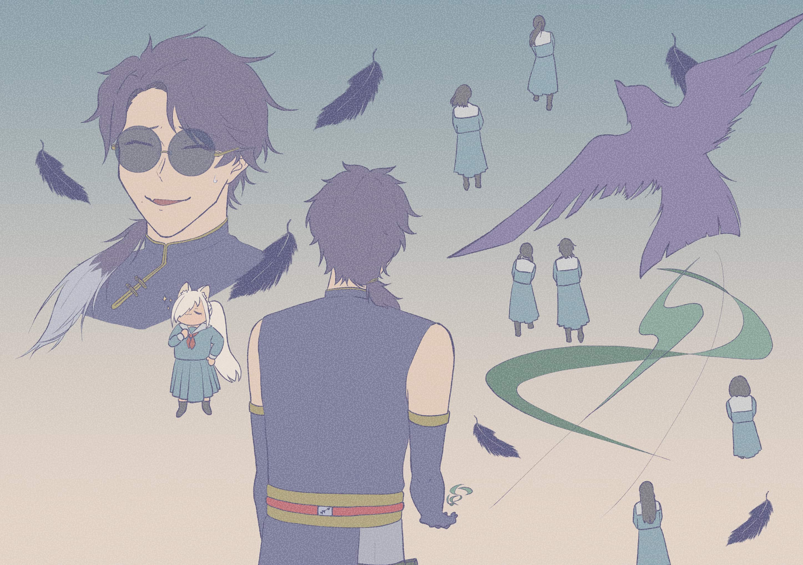
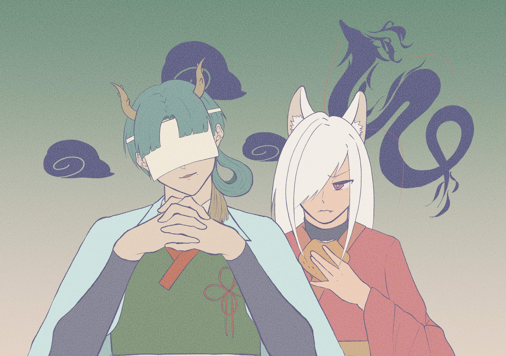
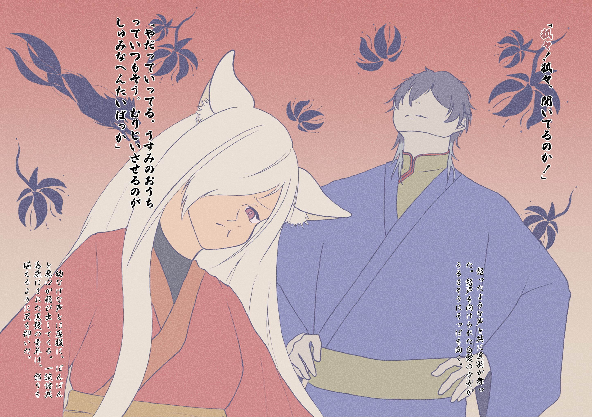
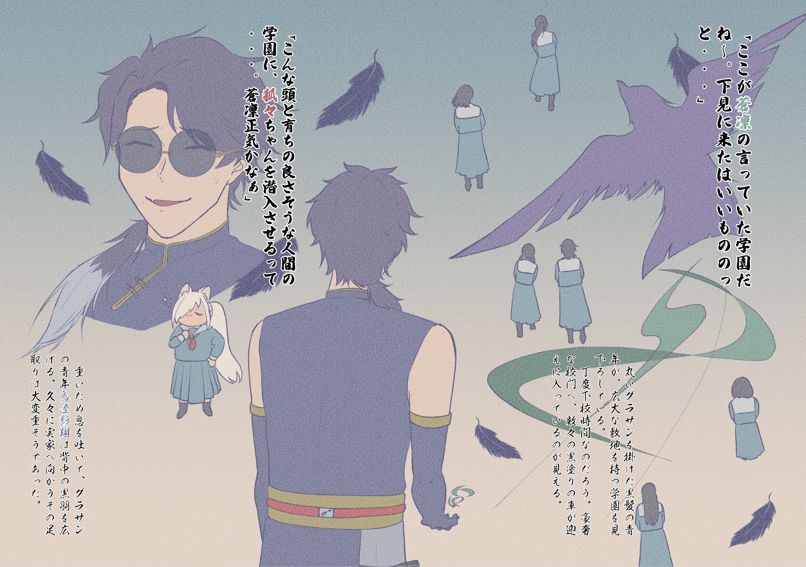
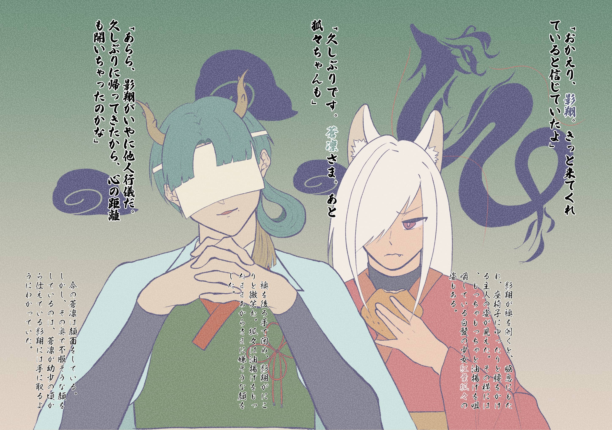

サイズ（用紙）：210×148mm
八雲封祓禍譚
〜狐々ちゃん、学園に行く〜
イラスト

キャラ設定
紅葉 狐々（もみじ ここ）
油揚げが全ての妖狐の子。おっとりした性格で油揚げがないと動かない。
蒼凛（そうりん）のいうことは油揚げがなくても聞いている。影翔（かげと）のことは
舐めていて毒舌を吐きながらいうことを聞かない（油揚げがある場合は別）。
話す言葉は全てひらがな。

烏澄 影翔（うすみ かげと）
普段は飄々としており掴みどころがない。蒼凛（そうりん）の一族に代々仕える家柄。
一族の長兄で周りから色々と言われることを嫌い、家にほぼ帰っていない。蒼凛（そうりん）
のことは小さな頃から見守っている。3人の中では一番頭が切れる参謀役。

天智 蒼凛（あまち そうりん）
齢56にして一族の若き当主。若いが故に他の者から舐められがちだが、実力でねじ伏せてきた。
影翔（かげと）たちとともに「八雲（やくも）」という組織を作り活動している。普段は当主として威厳
が出るよう振る舞っているが2人の前では年相応の態度が垣間見える。



物語
あらすじ
ここは人間と妖が共に暮らす国——《瑞穂国（みずほのくに）》。
そうは言っても街を歩くのは人間ばかり。妖たちは人目を忍び、日陰で生活していた。
そんな妖たちだけで構成された秘密組織——《八雲》。彼らの務めは、人の世に滲み出す“禍（まが）”を封じ、祓い、この国の均衡を保つこと。
その《八雲》に、ある日ひとつの依頼が舞い込んだ。
「人間の学園に異変アリ。瑞穂国立 学園に潜入し、調査してほしい」
依頼を受けた《八雲》の当主の天智 蒼凛（あまち そうりん）は、妖狐の少女紅葉 狐々（もみじ ここ）に潜入を任せるつもりのようで——！？
豪奢な校舎、頭の良さそうな人間たち、そして校内に巣喰う闇。
妖と人が挑む封祓禍譚、ここに開幕。

「狐々！狐々、聞いてるのか！」
怒ったような声と共に黒羽が舞った。怒声を向けられた白髪の少女がうるさそうにそっぽを向く。
「やだっていってる。うすみのおうちっていつもそう。むりじいさせるのがしゅみなへんたいばっか」
幼なげな声とは裏腹に、ぽんぽんと悪口が飛び出してくる。一族諸共馬鹿にされた黒髪の青年は、
怒りを堪えるように天を仰いだ。

「ここが蒼凛の言っていた学園だね〜。下見に来たはいいもののっと・・・」
丸いグラサンを掛けた黒髪の青年が、広大な敷地を持つ学園を見下ろしている。
丁度下校時間なのだろう。豪奢な校門へ、数々の黒塗りの車が迎えに入っているのが見える。
「こんな頭と育ちの良さそうな人間の学園に、狐々ちゃんを潜入させるって・・・。蒼凛正気かなぁ」
重いため息を吐いて、グラサンの青年——烏澄影翔は背中の黒羽を広げる。久々に実家へ向かうその足取りは大変重そうであった。

「おかえり、影翔。きっと来てくれていると信じていたよ」
影翔が襖を開くと、脇息にもたれ、座椅子にゆったりと腰をかける主人の姿が見えた。その横には、もっちゃもっちゃと油揚げを咀嚼している白髪の少女——紅葉狐々の姿もある。
「久しぶりです。蒼凛さま。あと狐々ちゃんも」
襖を後ろ手で閉め、影翔がにこりと微笑む。狐々は油揚げをもったままあからさまに嫌そうな顔をした。
「あらら、影翔がいやに他人行儀だ。久しぶりに帰ってきたから、心の距離も開いちゃったのかな」
今の蒼凛は顔面をしている。しかし、その奥で不服そうな顔をしているのは、蒼凛が幼少の頃から仕えている影翔には手に取るようにわかっていた。
アクセサリー

種類（サイズ）：ブレスレット（直径：最大7cm）
材料：刺繍糸【346、2500、406】、パールビーズ【黄、橙】（橙は大きさ2種）、丸カン